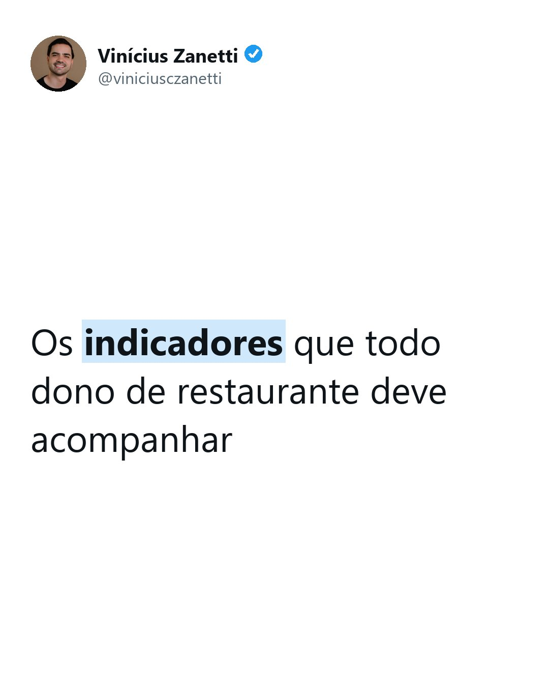

Indicadores do restaurante: os números que o dono deve acompanhar, e o que fazer com cada um
Não são 30 números num painel. São de cinco a nove, lidos sempre com comparação. No capítulo Acompanha do livro Restaurante no Controle, Vinícius Zanetti explica quais são e que decisão cada um puxa.
Publicado em 16/11/2026
O restaurante está cheio, o caixa recebe bem e a sensação é de que o negócio vai bem. Só que movimento não é lucro. No livro Restaurante no Controle, Vinícius Zanetti mostra uma conta que muitos donos nunca fizeram: neste exemplo do livro, um restaurante fatura R$ 80 mil por mês, tem CMV de 40%, custos fixos de 35% e despesas administrativas de 15%. Soma 90% do faturamento. Sobram 10% para impostos, taxas e lucro, e qualquer imprevisto vira crise sem o dono perceber.
O que separa quem percebe de quem não percebe é acompanhar poucos números, sempre os mesmos, com regularidade. É disso que trata o capítulo Acompanha, quarta etapa do método M.E.G.A.

"O que não é medido não é gerenciado."Vinícius Zanetti, no capítulo Acompanha do livro Restaurante no Controle
Quantos indicadores o dono de restaurante deve acompanhar?
Poucos. O livro se apoia no estudo de Sousa e Richa sobre consultoria empresarial, que recomenda ao gestor monitorar de cinco a nove indicadores ao mesmo tempo. Mais do que isso vira painel bonito que ninguém lê. Menos do que isso deixa ponto cego.
O critério de escolha também está no livro: o indicador precisa ter relação direta com o faturamento ou com a margem.
"Dado que não orienta decisão não merece espaço no painel de gestão."Vinícius Zanetti, no capítulo Acompanha do livro Restaurante no Controle
Quais são os principais indicadores de um restaurante?
"Principais indicadores de um restaurante" e "indicadores de desempenho restaurante" são buscas que o próprio Google sugere. O método M.E.G.A. trabalha com cinco grupos. A tabela resume o que cada um mostra e quando acender o alerta.
| Indicador | Como calcula | O que mostra | Sinal de alerta |
|---|---|---|---|
| Faturamento | Total vendido no período, por canal | Se o restaurante vende o suficiente | Queda contra o mês anterior, o mesmo mês do ano passado ou a meta |
| CMV | Estoque inicial + compras - estoque final, dividido pelo faturamento | Quanto da venda vira custo de mercadoria | Fora da faixa de 25% a 33%, ou CMV real acima do teórico |
| Margem de contribuição | Faturamento - deduções (impostos, cartão, plataformas) - CMV | Quanto sobra para pagar os custos fixos | Abaixo de 35% do faturamento |
| Ticket médio | Faturamento dividido pelo número de pedidos ou clientes | Se o crescimento veio de mais clientes ou de clientes gastando mais | Queda por semanas seguidas, principalmente no delivery |
| Marketing | Avaliação média, retorno de clientes, campanhas, alcance | Se o restaurante atrai e traz o cliente de volta | Avaliação caindo ou cliente que não volta |
As faixas de CMV e margem são as referências de trabalho da Zatti. Dentro de cada grupo cabem um ou dois números, o que dá os cinco a nove do livro.
Como ler o faturamento do restaurante?
Faturamento sozinho engana. Um mês forte parece bom até alguém lembrar que o mesmo mês do ano passado foi melhor. O livro pede três comparações: com o mês anterior, com o mesmo período do ano passado e com a meta do planejamento.
"Não basta saber quanto o restaurante faturou no mês."Vinícius Zanetti, no capítulo Acompanha do livro Restaurante no Controle
E pede uma quebra: por canal e por período. Saber que o delivery cresceu e o salão caiu, ou que a terça é o pior dia da semana, muda escala, compra e campanha.
Qual o CMV ideal para restaurante?
É uma das buscas mais feitas sobre o tema, com variações para hamburgueria e pizzaria. Na referência da Zatti, o CMV saudável fica entre 25% e 33% do faturamento. Mas o número sozinho não basta. O livro chama atenção para a comparação entre o CMV teórico, calculado a partir das fichas técnicas, e o CMV real, apurado pelo estoque. Quando o real fica acima do teórico de forma consistente, há perda, desperdício, desvio ou erro de porcionamento.
O peso disso no resultado também está no livro: neste exemplo, num restaurante que fatura R$ 100 mil por mês, cinco pontos percentuais de CMV são R$ 5 mil por mês. R$ 60 mil por ano.
A conta certa do CMV, que não é o total de compras do mês, está na matéria CMV não é compras do mês.
Qual a margem de contribuição ideal para restaurante?
Na referência da Zatti, a margem de contribuição mínima é de 35% do faturamento, e de 50% a 55% é uma margem boa. No método M.E.G.A., ela é lida na DRE gerencial: do faturamento bruto saem impostos sobre a venda, taxas de cartão e taxas das plataformas de delivery; depois sai o CMV. O que sobra é a margem que paga mão de obra, infraestrutura e logística.
É aqui que muito restaurante se engana. O livro descreve a situação: o faturamento bateu a meta e a margem ficou abaixo do esperado. Crescer em venda sem controlar deduções e CMV não resolve rentabilidade. Só aumenta o tamanho do problema.
Como calcular o ticket médio do restaurante?
É o faturamento do período dividido pelo número de pedidos, ou de clientes, no mesmo período. A conta é simples. A leitura é que importa. O livro coloca a pergunta que o ticket médio responde:
"O restaurante atendeu mais clientes, ou os clientes gastaram mais?"Vinícius Zanetti, no capítulo Acompanha do livro Restaurante no Controle
As duas situações pedem decisões diferentes. Mais clientes com ticket menor pode ser efeito de promoção demais no aplicativo, como mostra a matéria Cupom no delivery: por que derruba o ticket médio. Vale acompanhar o ticket por canal, porque salão e delivery costumam ter valores bem diferentes.
Quais indicadores de marketing o restaurante deve acompanhar?
O livro lista avaliação média e volume de avaliações nas plataformas, ticket médio por canal, taxa de retorno de clientes, desempenho das campanhas de delivery e alcance nas redes sociais. O filtro é o mesmo dos outros: se não mexe no faturamento ou na margem, não entra no painel. Curtida que não vira pedido não é indicador de gestão.
O que fazer quando um indicador sai do lugar?
Indicador só vale se mudar a decisão. O livro dá três situações concretas. O CMV subiu dois pontos: o dono investiga antes de o problema crescer. O ticket médio do delivery caiu por três semanas: ele olha se mudou o mix de pedidos ou se a campanha parou de funcionar. A margem ficou baixa com o faturamento na meta: ele vai atrás das deduções e do CMV, e não de mais venda.
Parte da investigação acontece na rotina semanal com a equipe. Os erros que custaram dinheiro, como mercadoria perdida e pedido estornado, aparecem no CMV do mês. A matéria O erro mais caro da semana mostra como registrar e tratar cada um.
Por onde começar: uma folha com cinco linhas, uma para cada grupo da tabela, e três colunas: este mês, mês anterior e meta. Preencha no fechamento do mês. Se alguma linha não puder ser preenchida porque o dado não existe, esse é o primeiro controle a montar.
Perguntas frequentes
Quais indicadores um restaurante deve acompanhar?
Faturamento por canal, CMV, margem de contribuição, ticket médio e indicadores de marketing ligados à venda, como avaliação média e retorno de clientes. A recomendação citada no livro Restaurante no Controle é monitorar de cinco a nove indicadores.
Qual o CMV ideal para restaurante?
Na referência da Zatti, o CMV saudável fica entre 25% e 33% do faturamento. Além da faixa, vale comparar o CMV real com o teórico, calculado pelas fichas técnicas.
Qual a margem de contribuição ideal para restaurante?
Na referência da Zatti, a mínima é 35% do faturamento, e de 50% a 55% é uma margem boa. Ela é o que sobra depois de impostos, taxas de cartão e plataformas e CMV.
Como calcular o ticket médio do restaurante?
Divida o faturamento do período pelo número de pedidos ou de clientes atendidos no mesmo período. Acompanhe por canal, porque salão e delivery costumam ter tickets diferentes.
Fontes
- Vinícius Zanetti, Restaurante no Controle: Método M.E.G.A. de gestão para restaurantes (Belo Horizonte, 2026), capítulo 5, Acompanha. Indicadores, critérios de escolha, situações de decisão e citações. O exemplo do restaurante de R$ 80 mil está na Introdução e o de R$ 100 mil com 5 pontos de CMV, nos capítulos Introdução e Resultados Esperados.
- Recomendação de cinco a nove indicadores: Sousa e Richa, Consultoria empresarial para melhoria de processos, artigo acadêmico citado no livro. CMV de 25% a 33% e margem de contribuição mínima de 35% (50% a 55% boa): referências de trabalho da Zatti Consultoria.